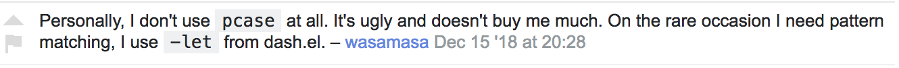

Multiple dispatch for Emacs Lisp
Table of Contents
- 1. Introduction
- 2. Installation
- 3. What to expect?
- 4. Reference
- 4.1. multi-patterns
- 4.1.1. mu-case macro
- 4.1.2. mu-prefer-nested-pcase var
- 4.1.3. mu-defpattern macro
- 4.1.4. mu-pattern-documentation procedure
- 4.1.5. built-in mu-patterns
- 4.1.6. predefined mu-patterns
- 4.1.7. mu-let macro
- 4.1.8. mu-when-let macro
- 4.1.9. mu-if-let macro
- 4.1.10. mu-defun macro
- 4.1.11. mu-defmacro macro
- 4.1.12. mu (μ) macro
- 4.1.13. mu-function? procedure
- 4.1.14. mu-defsetter macro
- 4.2. multi-structs and protocols
- 4.2.1. mu-defprotocol macro
- 4.2.2. mu-extend macro
- 4.2.3. mu-extends? procedure
- 4.2.4. mu-implements? procedure
- 4.2.5. mu-type? procedure
- 4.2.6. mu-defstruct macro
- 4.2.7. mu-table-protocol var
- 4.2.8. mu.slots (mu:slots) procedure
- 4.2.9. mu.keys (mu:keys) procedure
- 4.2.10. mu. (mu:) procedure
- 4.2.11. mu-equatable-protocol var
- 4.2.12. mu.equal procedure
- 4.2.13. mu-callable-protocol var
- 4.2.14. mu.call (mu:call) procedure
- 4.2.15. mu.apply (mu:apply) procedure
- 4.3. multi-methods
- 4.3.1. make-mu-hierarchy procedure
- 4.3.2. mu-global-hierarchy var
- 4.3.3. mu-active-hierarchy procedure
- 4.3.4. mu-with-hierarchy macro
- 4.3.5. mu-rel macro
- 4.3.6. mu-isa? procedure
- 4.3.7. mu-ancestors procedure
- 4.3.8. mu-descendants procedure
- 4.3.9. mu-isa/generations? procedure
- 4.3.10. mu-prefer procedure
- 4.3.11. mu-unprefer procedure
- 4.3.12. mu-defmulti macro
- 4.3.13. mu-defmethod macro
- 4.3.14. mu-undefmethod procedure
- 4.4. multi-benchmarks
- 4.1. multi-patterns
1 Introduction
multi.el is a multiple dispatch library for Emacs Lisp. It adds support for
- type-driven dispatch with multi-protocols,
- ad-hoc polymorphism with multi-methods,
- pattern-matching and destructuring without noise with multi-patterns,
- case-dispatch with multi-defuns,
- benchmarking all of the above with multi-benchmarks.
2 Installation
This is very much a hacker release, so I intentionally haven't published it on any package repositories. In truth I don't yet know how to do that. If you know your Elisp devops and want to see this project bundled properly, consider lending a hand.
For now, clone this repo and eval code as needed or load it from your init.el.
3 What to expect?
Please read this section carefully and manage your expections accordingly.
Warning: hacker release - not very user-friendly.
Little to no effort has been spared on optimization and performance. Even obvious things, like caching dispatch in multi-methods, are missing. This is intentional: any perf tuning requires careful and consistent measurments and systematic approach to code changes not ad-hoc guesswork. To that effect I hope I've set ourselves up for success by building multi-benchmarks that would turn any optimization effort into productive activity. Check out benchmarks.org to see multi-benchmarks in action (if reading on Github, choose RAW format) - it is an executable ORG-file. That said multi.el is feature complete and you'll get what the introduction has promised.
If you run into issues or want to contribute do yourself a favor and employ Edebug extensively. Edebug is your friend because I took care to edebug-spec most if not all macros. So, fret not and step debug it!
You can get both syntax-highlighting and appropriate Imenu entries for multi.el. Have a look at Font-lock & Imenu outline in multi-prelude.el.
All user-facing features and majority of private ones have been documented. In fact this README along with the Reference below have been generated by executing the make-readme.org file, which can even extract and test the examples. Isn't ORG-mode amazing! Check out the source if curious - I'm not really an ORG expert - just playing around.
4 Reference
4.1 multi-patterns

Figure 1: Sentiment about `pcase'
Multi-patterns build on the venerable pcase macro to give you powerful yet clean
pattern-matching. No more quote, unquote all over the place.
We also provide mu-defun and mu-defmacro that extend their native counterparts
with the ability to pattern match on and destructure arguments. To a first
approximation this is syntactic sugar over function definition and mu-case
expression. mu-defun exists in two versions: single-head and multi-head,
where the former is like defun that also pattern matches on its arglist binding
any pattern-variables in the body, while the latter allows multiple clauses each
with its own arglist pattern and body. Multi-head defun is not unlike and has been
inspired by Clojure's multi-head defn but is strictly more expressive.
4.1.1 mu-case macro
Like ‘pcase’ but uses mu-patterns for matching.
------------------------------
E = sexp
CLAUSES = (clause ...)
clause = (pattern body ...)
| (otherwise body ...)
------------------------------
Any sequence []-pattern is treated strictly - must match the
entire sequence to succeed.
Some basic examples. Note that [pat ...] is a sequence-pattern that will happily
match both lists and vectors.
(should (equal '(2 [3 4]) (mu-case [1 2 3 4] ((l a _ c) (list a c)) ((v a _ c) (list a c)) ([_ b | rest] (list b rest)) (otherwise 'no-match))))
4.1.2 mu-prefer-nested-pcase var
‘pcase’ expander may on occasion produce pathological expansions, where a reasonable 4-clause matcher expands into over 160K lines of code. Toggling this parameter where this happens will force ‘mu-case’ to convert generated pcase-clauses into a tree of nested pcase-calls before handing it over to ‘pcase’. This shrinks the expansion by orders of magnitude but may defeat some optimizations ‘pcase’ could have undertaken had it known all the clauses (citation needed).
4.1.3 mu-defpattern macro
Define an expander for a custom mu-pattern of the form (NAME &rest patterns) where actual patterns will be bound in the expander according to the ARGLIST. Expander must produce a valid mu-pattern. NAME is only required to identify the pattern, the macro does not bind it. Optional DOCSTRING maybe supplied to improve readability of your code. BODY may start with a :debug EDEBUG-SPEC attribute pair. (fn NAME ARGLIST &optional DOCSTRING &rest BODY)
For many examples see pre-defined custom patterns in multi-patterns.el
4.1.4 mu-pattern-documentation procedure
Extract docstring from custom mu-pattern NAME
4.1.5 built-in mu-patterns
- ?-pattern pattern
Predicate pattern. Equivalent to
(pred function)pcase-pattern.(should (eq 'match (mu-case 1 ((or (? zerop) (? oddp)) 'match))))
- lst-pattern pattern
List pattern. To match it must have the same number of patterns as elements in the list and every pattern must match. Unlike l-pattern it does not allow matching tail of a list with
&rest. - vec-pattern pattern
Vector pattern. Like lst-pattern but matches vectors.
4.1.6 predefined mu-patterns
- l-pattern pattern
mu-pattern to match lists. Unlike built-in lst-pattern allow a &rest subpattern to match remaining items.
(should (equal '(2 3) (mu-case '(1 (2 3)) ((l _ (l a | tail)) (list* a tail)))))
- v-pattern pattern
mu-pattern to match vectors. Unlike built-in vec-pattern allow a &rest subpattern to match remaining items.
(should (equal '(1 [2 3]) (mu-case [1 2 3] ((v x | tail) (list x tail)))))
- lv-pattern pattern
mu-pattern to match lists and vectors alike. Unlike seq-pattern it is strict and behaves like l-pattern for lists or v-pattern for vectors: must match the entire sequence to succeed.
- seq-pattern pattern
mu-pattern to match lists and vectors taking an open-world collection view: match as many PATTERNS as available. Fewer patterns than items in a sequence will simply match the head of the sequence; more patterns will match available items, then match any excessive patterns against that many nils. Supports &rest subpattern to match remaining items.
(should (equal '(1 2 3) (mu-case [(1) [(2)] (3)] ([[a] [[b]] [c]] (list a b c)))))
- mu-seq-pattern-force-list custom
Force seq-pattern to always cast its &rest submatch to a list. By default &rest submatch preserves the type of sequence being matched.
Forcing
&restsubmatch to a list is primarily useful when one wants to capture the rest of the sequence and test whether its empty with a traditionalnilcheck.Examples:
(should (equal [] (mu-case [] ([| rest] rest)))) (should (equal '() (let ((mu-seq-pattern-force-list 'list)) (mu-case [] ([| rest] rest))))) (should (equal '(1 ([2]) (3)) (let ((mu-seq-pattern-force-list 'list)) (mu-case [[1 [2]] 3] ([[x | y] | z] (list x y z))))))
- mu-seq-pattern-force-list custom
- ht-pattern pattern
mu-pattern for hash-tables, structs and alists. ------------------------------------------------ PATTERNS = (key-pat ...) key-pat = id | keywordp | ’symbolp | (key id) ------------------------------------------------ Keyword key-pat looks up :key then ’key in order binding value to variable ‘key’. Quoted symbol key-pat tries in order ’key then :key. (key id) looks up ‘key’ binding value to ‘id’ on success.
(should (equal '(1 2 3 4) (mu-case (ht (:a 1) ('b 2) (:c 3) ('d 4)) ((ht :a b 'c ('d D)) (list a b c D)))))
- ht|-pattern pattern
Mu-pattern for key-value sequence prefix. Try to match and collect sequence elements pair-wise as though they were elements of a hash-table. PATTERNS are key-patterns like in ht-pattern followed by an optional []-pattern to match the rest of the sequence. ------------------------------------------------ PATTERNS = (key-pat ... [seq-pattern]) key-pat = id | keywordp | ’symbolp | (key id) ------------------------------------------------
Example:
(should (equal '(1 2) (mu-case '(:a 1 :b 2 body) ([| (ht| a b)] (list a b))))) (should (equal '(1 2 (body)) (mu-case '(:a 1 :b 2 body) ([| (ht| a b [| rest])] (list a b rest)))))
- id-pattern pattern
Mu-pattern for identifiers - symbols that maybe used as variable names. E.g. it wil not match ‘t’ or ‘nil’.
4.1.7 mu-let macro
Like ‘let*’ but allow mu-patterns in binding clauses. Any
pattern-variables bound during pattern matching will be available
in the BODY.
-------------------------------
BINDINGS = ((pattern expr) ...)
| ‘[’clause ...‘]’
clause = pattern expr
-------------------------------
Any sequence []-pattern is permissive.
Note that in the example below []-pattern is permissive, so any extra pattern-variables are bound to nil, any extra sequence values that have no patterns to match are discarded:
(should (equal '(1 2 nil 3 5 6) (mu-let (([x y z] '(1 2)) ([a] '(3 4)) ((ht b c) (ht (:b 5) (:c 6)))) (list x y z a b c))))
With patterns on the left traditional Lisp-style let-bindings become busy. This is one case where an alternative Clojure-style let-syntax may be desirable. You may surround let-bindings with [] to minimize leading open-parens, so previous example becomes:
(should (equal '(1 2 nil 3 5 6) (mu-let [[x y z] '(1 2) [a] '(3 4) (ht b c) (ht (:b 5) (:c 6))] (list x y z a b c))))
4.1.8 mu-when-let macro
Like ‘when-let*’ but allow mu-patterns in binding clauses. See ‘mu-let’.
In the following example the second binding clause fails to match, so the body
never runs and the entire expression returns nil:
Example:
(should-not (mu-when-let ((a 1) ((l b) '(0 4))) (list a b)))
4.1.9 mu-if-let macro
Like ‘if-let*’ but allow mu-patterns in binding clauses. See ‘mu-let’.
Example:
(should (equal '(1) (mu-if-let ((a 1) ((l b) '(0 4))) (list a b) (list a))))
4.1.10 mu-defun macro
Like ‘defun’ but choose the body to execute by
pattern-matching on the arglist. Clauses are tried in order as if
multiple definitions of the same function NAME were defined.
------------------------------------
ARGLIST = seq-pattern
| _
| id
| (args ...)
METADATA = [docstring] attr ...
attr = :declare form
| :interactive form
| :before form
| :after form
| :return id
| :setup form
| :teardown form
BODY = body
| clause ...
clause = (seq-pattern body ...)
seq-pattern = ‘[’pattern ...‘]’
------------------------------------
In addition to any pattern-variables bound by clause-patterns
each body has ARGLIST variables in scope.
In attribute options :declare takes a list of ‘declare’ specs;
:interactive is either ‘t’ or an ‘interactive’ arg-descriptor;
:return binds VAR to the result of BODY; :setup and :teardown
execute their respective forms for side-effect before and after
BODY. Both forms have ARGLIST bindings in scope, :teardown form
has access to the VAR when :return is specified. To avoid before
and after forms being executed on every recursive call use
:before and :after attributes instead.
In a single-head function ARGLIST must be a []-pattern. In a
multi-head function ARGLIST that is an id will bind ARGLIST to
that id; ARGLIST that is ‘_’ will be ignored; ARGLIST must be a
‘defun’ arglist otherwise.
(fn NAME ARGLIST METADATA &rest BODY)
Note for Clojure programmers. Although inspired by Clojure the dispatch
semantics of mu-defun are more expressive. The following is not allowed in
Clojure:
(defn foo ([a b c] ...) ([a b & pattern] ...))
nor can you dispatch on the same arity
(defn foo ([a [b c] d] ...) ([a [b] c] ...))
I see no reason for us to follow in Clojure footsteps and surrender expressiveness afforded by patterns. multi.el takes the view that it is desirable to dispatch not only on the arity but on the internal structure as well.
Note that dispatch on arity takes priority over destructuring and binding. To that
effect the outermost sequence pattern in both single-head and multi-head
mu-defun is strict, so it either matches the same number of elements as
arguments passed to it or fails and tries the next clause. In multi-head case
internal sequence-patterns are strict as well, so that one can dispatch on the
internal structure even if multiple clauses have the same arity; in a single-head
only the external []-pattern is strict so that calls with incorrect arity maybe
caught; internal sequence patterns, however, are permissive to fascilitate
destructuring. None of this is terribly important as long as it matches user
expectation which I hope it does.
Example: single-head mu-defun
(mu-defun simple-foo [a [b [c]] | rest] (list* a b c rest)) (should (equal '(:a :b nil) (simple-foo :a [:b])))
Examples: multi-head mu-defun
(mu-defun foo-fun (&optional a b &rest args) "docstring" :interactive t ([_ _ x y] (list a b x y)) ([_ _ x] (list a b x)) ([_ _] (list a b)) ([_] (list a b)) ([] (list a b))) (should (equal '(:a :b 1 2) (foo-fun :a :b 1 2))) (should (equal '(:a :b 1) (foo-fun :a :b 1))) (should (equal '(:a :b) (foo-fun :a :b))) (should (equal '(:a nil) (foo-fun :a)))
In addition to :interactive and :declare, whose semantics come directly from
defun, mu-defun takes several other options as attributes. :return lets one
bind the result to an identifier that will be in scope in code forms specified
with :after and :teardown attributes. More generally one can specify forms to
run immediately before and after the function's body. This is normally done for
side-effects. Think of :setup and :teardown as prep-work before the function
runs and clean up after. Both forms have function's arglist in scope. When
present, these forms run unconditionally every time the function is called. This
may lead to unexpected behavior when the same function is called recursively. To
avoid this use :before and :after forms instead. These will not be executed in
nested invocations.
Example:
(mu-defun foo-with-setup [n] :return ret :setup (princ ":setup") :teardown (princ ":teardown") :before (princ ":before") :after (princ (format ":after %s" ret)) (if (zerop n) 0 (foo-with-setup (1- n)))) (should (equal ":before:setup:setup:teardown:teardown:after 0" (with-output-to-string (foo-with-setup 1))))
4.1.11 mu-defmacro macro
Like ‘defun’ but choose the body to execute by
pattern-matching on the arglist. Clauses are tried in order as if
multiple definitions of the same function NAME were defined.
------------------------------------
ARGLIST = seq-pattern
| _
| id
| (args ...)
METADATA = [docstring] attr ...
attr = :declare form
| :interactive form
| :before form
| :after form
| :return id
| :setup form
| :teardown form
BODY = body
| clause ...
clause = (seq-pattern body ...)
seq-pattern = ‘[’pattern ...‘]’
------------------------------------
In addition to any pattern-variables bound by clause-patterns
each body has ARGLIST variables in scope.
In attribute options :declare takes a list of ‘declare’ specs;
:interactive is either ‘t’ or an ‘interactive’ arg-descriptor;
:return binds VAR to the result of BODY; :setup and :teardown
execute their respective forms for side-effect before and after
BODY. Both forms have ARGLIST bindings in scope, :teardown form
has access to the VAR when :return is specified. To avoid before
and after forms being executed on every recursive call use
:before and :after attributes instead.
In a single-head function ARGLIST must be a []-pattern. In a
multi-head function ARGLIST that is an id will bind ARGLIST to
that id; ARGLIST that is ‘_’ will be ignored; ARGLIST must be a
‘defun’ arglist otherwise.
(fn NAME ARGLIST METADATA &rest BODY)
4.1.12 mu (μ) macro
Create an anonymous function, otherwise like ‘mu-defun’. (fn ARGLIST METADATA BODY...)
Examples:
(should (equal '(1 2 3 4) (funcall (mu [a b | args] (list* a b args)) 1 2 3 4))) (let ((mu-lambda (mu (a &rest _) ([_ b] (list a b)) ([_ b c] (list a b c))))) (should (equal '(1 2) (funcall mu-lambda 1 2))) (should (equal '(1 2 3) (funcall mu-lambda 1 2 3))))
4.1.13 mu-function? procedure
Like functionp but accounts for #’function and mu-lambda. Intended to be used at compile time on code objects. Not guaranteed to always do the right thing at runtime.
4.1.14 mu-defsetter macro
Like ‘gv-define-setter’ but allow ‘mu-defun’ dispatch and destructuring.
4.2 multi-structs and protocols
multi-structs.el implement mu-structs and mu-protocols that were loosely inspired by Clojure records and protocols and Racket's structs and generic interfaces although Racket doesn't allow delegation, so polymorphic it may be, but not really what you come to expect from type dispatch.
mu-structs are built on top of Emacs Lisp cl-structs. Expect all of cl-struct
machinery to work. Mu-structs are defined with mu-defstruct and must inherit
either from the base type mu-struct (default) or one of its descendants. Unlike
cl-structs mu-structs are open maps that allow non-slot keys to be looked up and
set.
Protocols (sometimes called generic interafaces) allow type specialization of a
set of generic methods. Protocols are defined and assigned a set of methods with
mu-defprotocol. Structure types can implement protocols by reifying their
registered methods in mu-defstruct when a new struct type is being defined.
Alternatively protocol maybe extended to an existing type with mu-extend.
Protocol methods are effectively generic methods as implemented by cl-defgeneric
limited to single dispatch. Generic dispatch is performed on the type of the first
argument - what cl-defmethod documentation would call (obj TYPE) specializer.
Protocol implementations may reify several methods with the same name but different arities. Apropriate method will be matched and invoked at dispatch.
We also implement and extend to existing types several useful protocols e.g.
mu-table-protocol allows one to query any associative data structure with the
same set of functions. For instance setting and querying a nested key in a
hash-table becomes as trivial as:
(setf (mu. table :a :b :c) 42) (mu. table :a :b :c)
the above setf will even create nested hash-tables for intermediate keys that
are missing.
4.2.1 mu-defprotocol macro
Combine a set of generic METHODS as protocol NAME. ---------------------------------------------------------- NAME = protocol-id METHODS = (method ...) method = (defmethod method-id arglist [docstring] . rest) rest = see ‘cl-defgeneric’ ---------------------------------------------------------- Bind variable NAME to the newly created ‘mu-protocol’ struct. Translate every method to a ‘cl-defgeneric’ (which see). Store arglists as metadata and for documentation but otherwise ignore. Tag every method-id symbol with a property :mu-protocol. Protocol METHODS are cl-generic functions that dispatch on the type of their first argument.
By convention protocol names are expected to have suffix able while protocol
variable created and bound by mu-defprotocol will have a compound suffix
able-protocol as in mu-callable vs mu-callable-protocol. So the following
definition
(mu-defprotocol mu-callable-protocol (defmethod mu--call (f args)))
will bind variable mu-callable-protocol to a fresh mu-protocol struct whose
name is mu-callable. It will also register all methods that appear in the body
as cl-generic functions and part of the protocol. For the moment method arglists
are no more than metadata and won't effect how methods are reified or used.
The calling convention of previous paragraph is not enforced by implementation but
would make multi-method style isa? relations sound and read more natural. That
is any time a type implements a protocol a new relation is added to multi-methods
hierarchy of the form: TYPE isa PROTOCOLLABLE. For example:
(mu-rel 'hash-table :isa 'mu-callable)
Establishing such relations from protocol implementations creates a bridge from a
more rigid style of dispatch sanctioned by protocols to a more ad-hoc style
offered by multi-methods. I.e. it should be possible to perform a multi-method
type-of dispatch on a protocol that would be satisfied by any type that
implements said protocol.
4.2.2 mu-extend macro
Extend PROTOCOL to one or more existing types.
------------------------------------------------------------------------
PROTOCOL = protocol-id
TYPE = type-id
method = (defmethod method-id [qualifiers] arglist [docstring] body)
arglist = ((arg-id type-id) arg ...)
| see ‘cl-defmethod’
qualifiers = see ‘cl-defmethod’
------------------------------------------------------------------------
Also register an ‘isa?’ relation between TYPE and protocol name
as reported by (mu-protocol-name PROTOCOL) in the active
multi-methods hierarchy. Do the same for each descendant of TYPE.
To extend protocols to structs under your control consider using
:implements option of ‘mu-defstruct’ instead.
(fn PROTOCOL [:to TYPE method ...] ...+)
(mu-extend mu-callable-protocol :to cl-structure-object (defmethod mu--call (obj args) (if-let ((f (or (get (type-of obj) :call) (mu. obj :call)))) (apply f obj args) (apply #'mu. obj args))) :to hash-table (defmethod mu--call (obj args) (if-let ((f (ht-get obj :call))) (apply f obj args) (apply #'mu. obj args))))
4.2.3 mu-extends? procedure
Check if PROTOCOL has been extended to TYPE (fn &key TYPE PROTOCOL)
4.2.4 mu-implements? procedure
Check if OBJECT implements PROTOCOL
4.2.5 mu-type? procedure
Check if symbol TYPE is tagged as a mu-type (inherits from ‘mu-struct’)
4.2.6 mu-defstruct macro
Like ‘cl-defstruct’ but with mu-struct extensions.
------------------------------------------------------------------------
NAME = struct-id
| see ‘cl-defstruct’
SLOT = slot-id
| see ‘cl-defstruct’
PROTOCOL = protocol-id
METHOD = (defmethod method-id [qualifiers] arglist [docstring] body)
arglist = ((arg-id type-id) arg ...)
| see ‘cl-defmethod’
qualifiers = see ‘cl-defmethod’
------------------------------------------------------------------------
Every mu-struct implicitly inherits from ‘mu-struct’ type. If
:include struct property is present its value must be a type that
ultimately inherits from ‘mu-struct’. Any other type will raise
an error.
Define extra predicate of the form NAME? as alias for NAME-p.
Define NAME as a getter function for slots and keys of the
struct. Make NAME a generalized ‘setf’-able variable (see ‘mu.’).
In general mu-structs are open maps whose keys are not limited to
slots. Generalized variables ‘mu.’ (or ‘mu:’) and NAME can be
used to set slots or keys of a struct.
Slots maybe followed by protocol implementations. Every protocol
implementation starts with :implements attribute followed by
protocol-name, followed by method implementations. Multiple
methods maybe implemented for the same method-id but different
arities. Since protocol methods dispatch on the type of their
first argument every method will have the structure instance
bound to it. Each method body implicitly binds every slot-id to
its respective value in the structure instance.
Set two properties on struct-id symbol :mu-type? tagging it as a
‘mu-struct’ and :mu-slots that keeps a list of all slot-ids.
(fn NAME SLOT ... [:implements PROTOCOL METHOD ...] ...)
Every mu-struct is a cl-struct, so most cl-struct infrastructure should work as expected. That includes constructing, getting and setting slots, etc.
;; define a new mu-struct (mu-defstruct foo-struct props) ;; define a new mu-struct that inherits from `foo-struct' and provides its own ;; (partial) implementation of two protocols (mu-defstruct (bar-struct (:include foo-struct)) (name :bar) :implements mu-table-protocol (defmethod mu--get (obj key) (case key ('name name) ('props (bar-struct-props obj)))) (defmethod mu--set (obj key val) (case key ('name (setf (bar-struct-name obj) val)) ('props (setf (bar-struct-props obj) val)))) :implements mu-callable-protocol (defmethod mu--call (f args) name)) (setq bar (bar-struct-create)) (setq foo (foo-struct-create)) (should (bar-struct? bar)) (should (foo-struct? bar)) (should (mu-struct? bar))
mu-defstruct also defines a generalized-variable of the same name as struct
(foo-struct and bar-struct in our example) that can be used to get and set
struct slots and potentially deeply nested keys assuming the default
implementation of mu-table-protocol (see mu. function).
With a crude implementation of the protocol above we can set and get slots of a bar-struct instance but not much more. Default implementation affords more power. One can set values deep in the structure starting with its slots, or even set keys that aren't slot. That is structs are treated as open maps.
(setf (bar-struct bar 'name) :baz) (should (eq :baz (bar-struct bar 'name))) (setf (foo-struct foo :props :a 'b :c) 42) (should (eq 42 (foo-struct foo :props :a 'b :c))) (setf (foo-struct foo :not-a-slot) '()) (push 42 (foo-struct foo :not-a-slot)) (should (equal '(42) (foo-struct foo :not-a-slot)))
Notice that protocol methods implemented inside mu-defstruct have slots
explicitly defined (not inherited) in the struct definition in their lexical
scope. So, for instance, mu--call method above can refer to the current slot
value name.
4.2.7 mu-table-protocol var
Protocol for table-like types. Define protocol methods ‘mu--slots’, ‘mu--keys’, ‘mu--get’, ‘mu--set’.
Table protocol makes working with map-like data easy. It provides unified
key-value interface, so when implemented for a custom type, keys can be looked up
and set in its instances with mu. (or mu:) function.
Table protocol has been extended to the following types: hash-table, mu-struct
and therefore to all structures created with mu-defstruct, cl-structure-object
and therefore to all structures created with cl-defstruct, symbol, cons,
vector.
Last 3 of the listed types are experimental with access semantics not quite worked out, but they should work for typical cases.
4.2.8 mu.slots (mu:slots) procedure
Return required keys in OBJ. OBJ must implement ‘mu-table-protocol’.
4.2.9 mu.keys (mu:keys) procedure
Return all keys in OBJ. OBJ must implement ‘mu-table-protocol’.
4.2.10 mu. (mu:) procedure
Look up KEYs in TABLE. Return nil if any KEYs missing. This is a generalized variable and therefore ‘setf’-able. TABLE must implement ‘mu-table-protocol’.
As previously mentioned one can use generalized variable defined by mu-defstruct
to lookup and set (potentially nested or missing) keys in a struct. mu. function
is a generalization of this idea that should work for any type that implements
mu-table-protocol, so that there's no need for type-specific functions that are
morally equivalent. This should aleviate the pain of having to use statically
defined struct slot accessors e.g. foo-struct-name or hash-table specific
ht-get for a single key look up, or ht-get* for multiple keys, etc.
mu. is also an attempt compress code without loss of information. It is not
uncommon to name local variables that hold struct instances so that one can
immediately deduce their type e.g. foo for a foo-struct instance. Even
generalized variables like (foo-struct foo :props) duplicate information and
introduce unnecessary noise in the code. Struct getters like foo-struct-props do
the same and are static. mu. offers a reasonably short alternative that works
for all major associative types.
(setq foo (foo-struct-create :props (ht (:b 1)))) (setq baz (foo-struct-create :props (ht (:a foo)))) ;; look up a deeply nested key (should (eq 1 (mu. baz :props :a :props :b))) ;; mutate stored value (setf (mu. baz :props :a :props :b) 42) (should (eq 42 (mu. baz :props :a :props :b))) ;; create a new nested key (setf (mu. baz :props :a :props :new-key) 0) (should (zerop (mu. baz :props :a :props :new-key)))
To set nested keys mu. will create intermediate tables for any missing keys as
needed. So, the following example is morally equivalent to the one above:
(setq baz (foo-struct-create)) (setf (mu. baz :props :a) (foo-struct-create)) (setf (mu. baz :props :a :props :b) 42) (should (eq 42 (mu. baz :props :a :props :b)))
4.2.11 mu-equatable-protocol var
Protocol for deep equality. Define protocol methods ‘mu--equal’.
4.2.12 mu.equal procedure
Test if OBJ1 and OBJ2 are of the same type and structurally equal. Unlike ‘equal’ perform deep equality comparison of hash-tables as values. Like ‘equal’ report nil when comparing hash-tables that have hash-tables as keys. (fn obj1 obj2)
4.2.13 mu-callable-protocol var
Protocol for types that exhibit function-like behaviour. Define protocol method ‘mu--call’.
mu-callable protocol allows one to invoke instances of any type that implements
it as if they were procedures. Although this requires the use of API functions
mu.call and mu.apply in place of the native funcall and apply, the former
two effectively subsume the latter by delegating to them in the default case when
instance is already a function.
We implement this protocol for all structures (both mu-structs and cl-structs) as
well as hash-tables. Default implementation simply delegates to mu. to perform
key lookup:
(setq foo (foo-struct-create)) (setf (mu. foo :a :b) 42) (should (eq 42 (mu.call foo :a :b))) (should (eq 42 (mu.apply foo :a '(:b))))
One can override the default instance behaviour by setting a 'call slot of a
struct (when available), a :call key of a hash-table or a mu-struct to a
function. This function will be applied instead of the default with the instance
passed as the first argument.
Or alter the behavior of the entire struct type by providing custom implementation
of the mu-callable-protocol.
Inspired by Racket structs that can be made into procedures.
4.2.14 mu.call (mu:call) procedure
Like ‘funcall’ but invoke object F with ARGS. Unless F implements ‘mu-callable-protocol’ it is assumed to be a function and ‘funcall’ is used.
4.2.15 mu.apply (mu:apply) procedure
Like ‘apply’ but apply object F to ARGS. Unless F implements ‘mu-callable-protocol’ it is assumed to be a function and ‘apply’ is used.
4.3 multi-methods
Multimethods bring ad-hoc multiple dispatch to Emacs Lisp. Multimethod combines a
dispatch function with an open set of methods each associated with a value. When
multimethod gets called its dispatch function, defined with mu-defmulti, is
applied to the arguments to compute a dispatch value. Dispatch mechanism then
checks which method, defined with mu-defmethod, has its value in an isa?
relatitonship with the dispatch value and runs that method. To a first
approximation isa-relation can be thought of as two values being equal or in a
parent-child or ancestor-descendant relationship. Semantics get more involved for
collections. Programmers not familiar with multimethods are referred to Clojure's
Multimethods and Hierarchies tutorial.
Note for Clojure programmers. This implementation takes a lot of inspiration from Clojure, so for the most part you should feel right at home modulo some syntactic differences. Naturally, Emacs Lisp type system is nothing like Clojure's let alone Java's, so some of your programming patterns may require adjustment.
4.3.1 make-mu-hierarchy procedure
Create a new mu-hierarchy.
4.3.2 mu-global-hierarchy var
Global hierarchy
4.3.3 mu-active-hierarchy procedure
Return the hierarchy active in the current dynamic extent.
4.3.4 mu-with-hierarchy macro
Prefer HIERARCHY during the dynamic extent of the body.
4.3.5 mu-rel macro
Establish an isa relationship between CHILD and PARENT in the
currently active hierarchy or HIERARCHY.
(mu-rel CHILD REL PARENT [HIERARCHY])
-------------------------------------
CHILD = val
REL = :isa | isa | any
PARENT = val
HIERARCHY = mu-hierarchy-p
-------------------------------------
REL argument is provided to help readability but is otherwise
ignored.
Example:
(mu-rel 'vector :isa :collection) (mu-rel 'hash-table :isa :collection) (mu-defmulti foo #'type-of) (mu-defmethod foo (c) :when :collection :a-collection) (mu-defmethod foo (s) :when 'string :a-string) (should (equal :a-collection (foo []))) (should (equal :a-collection (foo (ht)))) (should (equal :a-string (foo "bar")))
4.3.6 mu-isa? procedure
Check if CHILD is isa? related to PARENT in the currently active hierarchy or HIERARCHY.
4.3.7 mu-ancestors procedure
Return all ancestors of X such that (mu-isa? X ancestor) in the currently active hierarchy or HIERARCHY.
4.3.8 mu-descendants procedure
Return all descendants of X such that (mu-isa? descendant X) in the currently active hierarchy or HIERARCHY.
4.3.9 mu-isa/generations? procedure
Like ‘mu-isa?’ but return the generation gap between CHILD and PARENT. (fn X Y &optional (HIERARCHY nil) (GENERATION 0))
4.3.10 mu-prefer procedure
Prefer dispatch value X over Y when resolving method FUN.
(mu-prefer FUN ARGS ...)
------------------------
FUN = id
ARGS ... = val :to val
| val :over val
| val val
------------------------
(fn fun x :over y)
Example:
(mu-rel :rect isa :shape) (mu-defmulti bar #'vector) (mu-defmethod bar (x y) :when [:rect :shape] :rect-shape) (mu-defmethod bar (x y) :when [:shape :rect] :shape-rect) (should (mu--error-match "multiple methods match" (bar :rect :rect))) (mu-prefer bar [:rect :shape] :over [:shape :rect]) (mu-prefer bar [:rect :shape] :over [:parallelogram :rect]) (should (equal :rect-shape (bar :rect :rect)))
4.3.11 mu-unprefer procedure
Remove registered preferences for FUN multi-dispatch function:
(mu-unprefer FUN ARGS ...)
--------------------------
FUN = id
ARGS ... = val :to val
| val :over val
| val val
| val
|
--------------------------
Called with a single VAL argument removes all preferences defined
for the dispatch VAL; called with just FUN removes all known
preferences for FUN.
(fn foo x :over y)
4.3.12 mu-defmulti macro
Define a new multi-dispatch function NAME.
--------------------------------------------------
ARGLIST = cl-arglist
| seq-pattern
| mu-function?
BODY = [metadata] clause ...
clause = body
| mu-defun-clause ...
metadata = :hierarchy mu-hierarchy-p
| :static-hierarchy mu-hierarchy-p
mu-defun-clause = (seq-pattern body ...)
seq-pattern = ‘[’mu-pattern ...‘]’
--------------------------------------------------
ARGLIST maybe a CL-ARGLIST, a function (#’function, ‘lambda’,
‘mu’ lambda) or a sequence []-pattern. When ARGLIST is itself a
function, BODY is ignored and that function is used to dispatch.
ARGLIST and BODY combined may follow single-head or multi-head
syntax to define a ‘mu-defun’ for dispatch and destructuring.
BODY must return a value to be used for ‘mu-isa?’ dispatch.
See mu-defmethod for examples.
Unless either :hierarchy or :static-hierarchy attribute options are set
multi-dispatch defaults to mu-global-hierarchy to perform mu-isa? value
dispatch. One can switch dispatch to a custom hierarchy created with
make-mu-hierarchy by setting :hierarchy attribute to that hierarchy. Both
default and custom hierarchies can be overriden with mu-with-hierarchy for the
dynamic extent of its body. When such dynamic behavior is not desired set
:static-hierarchy attribute instead.
Example:
(let ((hierarchy-1 (make-mu-hierarchy)) (hierarchy-2 (make-mu-hierarchy))) (mu-defmulti bar #'identity :hierarchy hierarchy-1) (mu-defmethod bar (a) :when :parallelogram :parallelogram) (mu-defmethod bar (a) :when :shape :shape) (mu-rel :rect isa :parallelogram hierarchy-1) (mu-rel :square isa :rect hierarchy-1) ;; should run with custom hierarchy-1 (should (equal :parallelogram (bar :rect))) (should (equal :parallelogram (bar :square))) (mu-with-hierarchy hierarchy-2 ;; should extend hierarchy-2 (mu-rel :rect isa :shape) (mu-rel :square isa :rect) ;; should run with hierarchy-2 overriding hierarchy-1 (should (equal :shape (bar :rect))) (should (equal :shape (bar :square)))) ;; should be back to the custom hierarchy-1 (should (equal :parallelogram (bar :rect))) (should (equal :parallelogram (bar :square))))
4.3.13 mu-defmethod macro
Add a new method to multi-dispatch function NAME for dispatch
value VAL.
----------------------------------------
ARGLIST = cl-arglist
| seq-pattern
| mu-function?
BODY = clause ...
clause = body
| mu-defun-clause ...
mu-defun-clause = (seq-pattern body ...)
seq-pattern = ‘[’mu-pattern ...‘]’
----------------------------------------
ARGLIST maybe a ‘cl-arglist’, a function (#’function, ‘lambda’,
‘mu’ lambda) or a sequence []-pattern. ARGLIST and BODY combined
may follow single-head or multi-head syntax to define a
‘mu-defun’ for dispatch and destructuring.
Examples:
;; dispatch as a function (mu-defmulti foo #'vector) (mu-defmethod foo (a b) :when [:a :b] [:a :b]) (mu-defmethod foo (a b) :when [:c :d] [:c :d]) (should (equal [:a :b] (foo :a :b))) (should (equal [:c :d] (foo :c :d))) (should (mu--error-match "no mu-methods match" (foo :a :d))) ;; dispatch as a `defun' (mu-defmulti foo (&rest args) "docstring" :hierarchy mu-global-hierarchy (apply #'vector args)) (mu-defmethod foo (a b) :when [:a :b] [:a :b]) (mu-defmethod foo (a b) :when [:c :d] [:c :d]) (should (equal [:a :b] (foo :a :b))) (should (equal [:c :d] (foo :c :d))) ;; single-head `mu-defun' style dispatch (mu-defmulti foo [_ [arg]] "docstring" arg) ;; simple `defun' style methods (mu-defmethod foo (a b) :when 1 1) (mu-defmethod foo (a b) :when 2 2) (should (eq 1 (foo 0 [1]))) (should (eq 2 (foo 0 [2]))) (should (mu--error-match "no mu-methods match" (foo 0 [3]))) ;; `mu' lambda dispatch (mu-defmulti foo (mu [_ [arg]] arg) "docstring" :hierarchy mu-global-hierarchy) ;; single-head `mu-defun' style method (mu-defmethod foo [[a] _] :when 1 (list a)) ;; `mu' lambda method (mu-defmethod foo (mu [[a b] _] (list a b)) :when 2) (should (equal '(a) (foo [a] [1]))) (should (equal '(a b) (foo [a b] [2]))) ;; multi-head `mu-defun' style method (mu-defmethod foo (a b) :when 2 ([[a] _] (list a)) ([[a b] _] (list a b))) (should (equal '(a) (foo [a] [1]))) (should (equal '(a b) (foo [a b] [2]))) ;; multi-head dispatch (mu-defmulti foo (&rest args) "docstring" :hierarchy mu-global-hierarchy ([a] a) ([a b] b)) (mu-defmethod foo (&rest args) :when 1 1) (mu-defmethod foo (&rest args) :when 2 2) (should (eq 1 (foo 1))) (should (eq 2 (foo 1 2)))
Multi-methods allow a catch-all default method that runs when dispatch fails. Pre-installed default simply signals that no matching methods have been found.
Example: default method
(mu-defmulti foo #'identity) (mu-defmethod foo (x) :when :a :a) ;; pre-installed default method fires (should (mu--error-match "no mu-methods match" (foo :c))) ;; user-defined default method (mu-defmethod foo (x) :when :default :default) (should (equal :default (foo :c))) ;; no longer default when dispatch val gets a method (mu-defmethod foo (x) :when :c :c) (should (equal :c (foo :c)))
4.3.14 mu-undefmethod procedure
Remove multi-method for FUN and dispatch value VAL
4.4 multi-benchmarks
Although bundled together with all things multi, benchmarks may actually belong in a package of their own.
Multi-benchmarks is a series of macros to measure execution time of arbitrary code. Code is byte-compiled before any such measurment is taken. Whenever possible library functions attempt to account for any overhead they introduce. Measurements are reported as lists that ORG-mode recognizes as tables. This makes comparing, tracking, visualizing and sharing performance stats in an ORG file very convenient.
Please see ./benchmarks.org in this repository for how multi-benchmarks can leverage ORG-mode to measure and track real code performance.
Examples:
(example (mu-bench :times 3 (princ (+ 1 2))) (let ((mu-bench-debug-print 2)) (mu-bench* :times 3 :compare t (mu-bench "1" (+ 1 2)) (mu-bench/let ((a 1)) "2" (+ 1 a)))) (mu-bench*/let ((a 0) (b 1)) :times 3 :compare t (mu-bench "1" (princ (+ a b))) (mu-bench/let ((a 1)) "2" (princ (+ a b)))) (mu-defbench bar-bench (a b) :times 3 (princ (+ a b))) (bar-bench 1 2) (mu-defbench* foo-bench (a b) :times 3 :compare t (mu-bench :name "1" (princ (+ a b))) (mu-bench/let ((a 1)) :name "2" (princ (+ a b)))) (foo-bench 0 1) (let ((mu-bench-debug-print 2)) (mu-bench/context ;; benchmark (mu-bench/let ((a 1) (b 2)) :times 3 (list (foobar) (barfoo) a b)) ;; context (defun foobar () 'foobar) (defun barfoo () 'barfoo))) ;; example )
4.4.1 mu-bench-debug-print var
t or NUMBER. When in scope every mu-bench will accumulate that many results and pretty-print to STDOUT. ‘mu-bench/context’ will pretty-print its entire context in a temporary *mu-bench-context* buffer.
4.4.2 mu-bench macro
‘benchmark-run-compiled’ BODY that many TIMES. Unless RAW is
requested collect results into an ORG-ready table with headings.
(mu-bench [DOC] ATTR-OPTION ... BODY)
-------------------------------------
DOC = stringp
ATTR-OPTION = :name stringp
| :times numberp
| :raw boolean
BODY = code ...
-------------------------------------
TIMES defaults to 10’000. RAW defaults to nil. Unless NAME
attribute is supplied DOC is used to identify the benchmark in
statistics produced.
(fn &optional docstring &key name times raw &rest body)
4.4.3 mu-bench* macro
Like ‘mu-bench’ but BODY must be a sequence of mu-benches to
run.
(mu-bench* [DOC] ATTR-OPTION ... BODY)
--------------------------------------
DOC = stringp
ATTR-OPTION = :times numberp
| :raw boolean
| :compare boolean
BODY = bench ...
bench = ‘mu-bench’
| ‘mu-bench/let’
--------------------------------------
When COMPARE is t report performance relative to the benchmark
that shows the best time, sort benchmarks table by relative
performance fastest to slowest.
(fn &optional docstring &key times raw compare &rest mu-benches)
4.4.4 mu-bench/let macro
Like ‘mu-bench’ but with additional bindings in VARLIST available in BODY. ------------------------- VARLIST = ((id expr) ...) ------------------------- (fn varlist &optional docstring &key name times raw &rest body)
4.4.5 mu-bench*/let macro
Like ‘mu-bench*’ but with additional bindings in VARLIST available in BODY. ------------------------- VARLIST = ((id expr) ...) ------------------------- (fn varlist &key times raw compare &rest mu-benches)
4.4.6 mu-defbench macro
Like ‘mu-bench’ that can be called by NAME with variables in ARGLIST in scope.
4.4.7 mu-defbench* macro
Like ‘mu-bench*’ that can be called by NAME with variables in ARGLIST in scope.
4.4.8 mu-bench/context macro
Run MU-BENCH with additional CONTEXT compiled and loaded as ‘progn’ before MU-BENCH. Semantically it is as if one wrote CONTEXT code followed by MU-BENCH in a file, byte-compiled then loaded it. -------------------------------------- MU-BENCH = ‘mu-bench’ | ‘mu-bench/let’ CONTEXT = body --------------------------------------